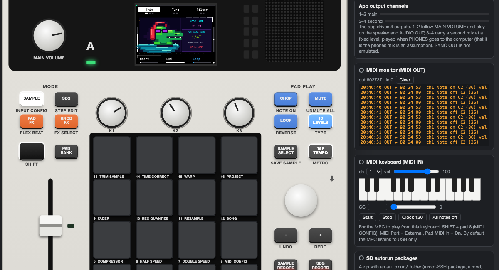
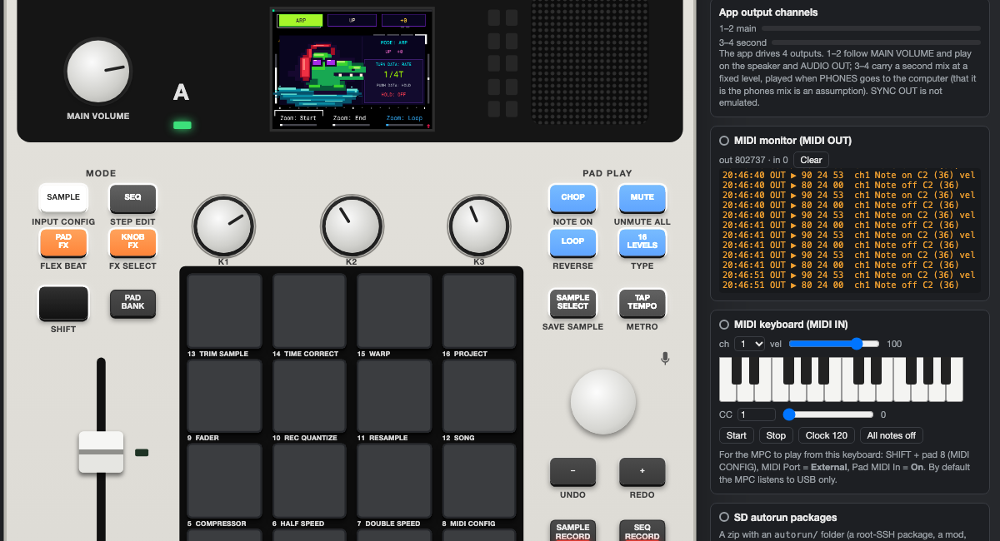
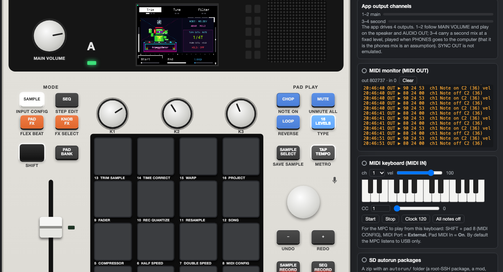
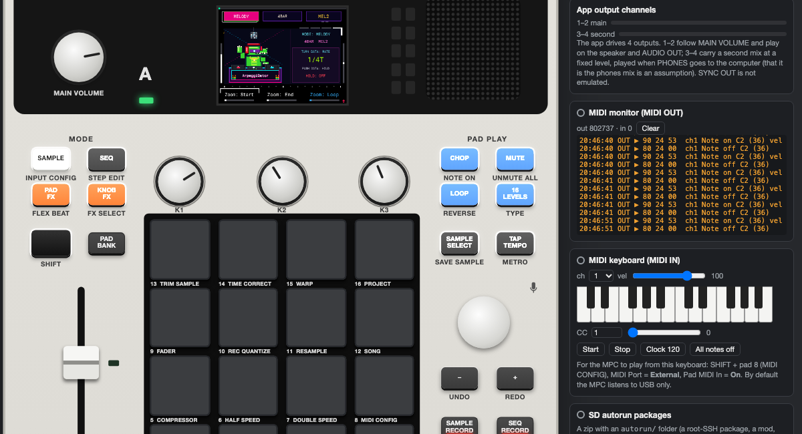
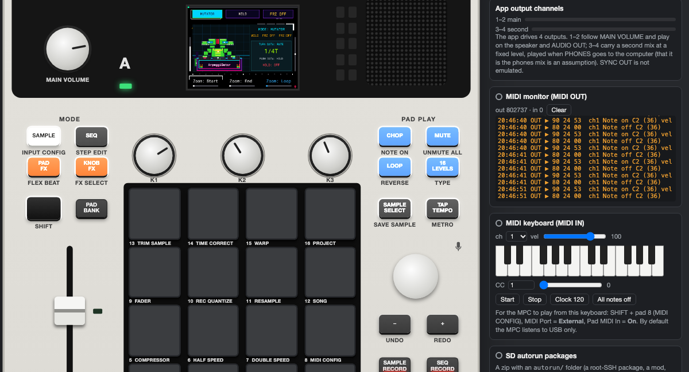
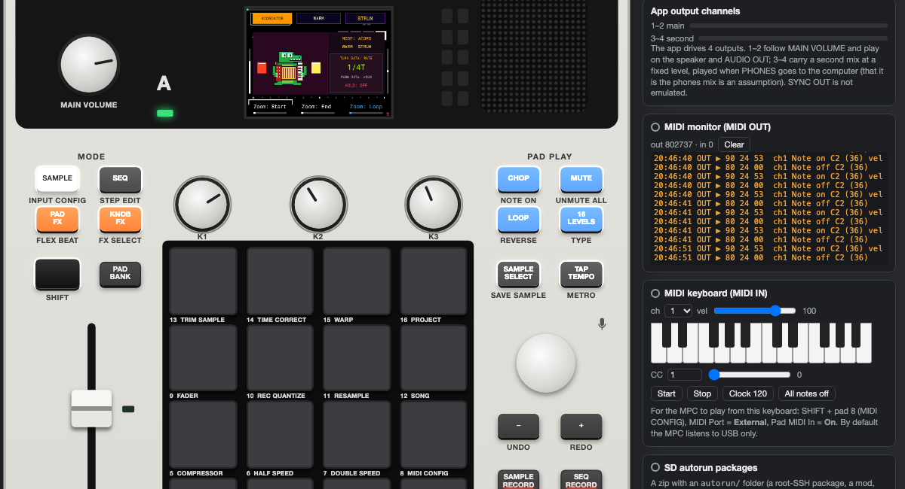
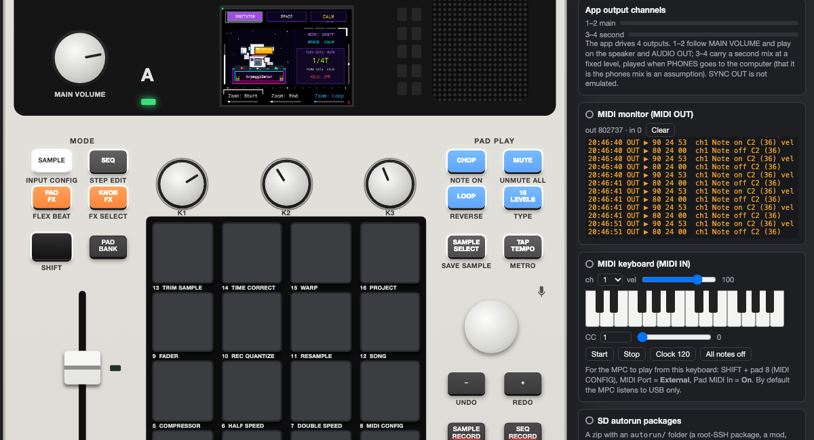

BETA SOFTWARE — use at your own risk. Tested on firmware 1.3.0.12 in the emulator and confirmed on physical MPC Sample hardware.
⚠️ Compatibility — read before you insert the card
TESTED: ArpeggiGator v0.0.7.4 was developed and tested in the virtual MPC Sample emulator (QA/DEV) and confirmed on physical AKAI MPC Sample hardware, on firmware 1.3.0.12 (guard 44507c7a7d3029c411b2e3780ea286ca3e08b7e3ffd7b5047d52f73bf5299d1f). The 0.0.7.x package ships a native-audio build targeted at firmware 1.3.0.12 with hook-signature verification. Emulator audio (MPC_MOD_FEATURES=emulator-audio) was used only in experimental phases; the release build uses native audio and is firmware-guarded.
NOT TESTED: No other firmware version, no other MPC model, and no other operating system or environment has been tested. Compatibility outside the tested emulator + firmware 1.3.0.12 combination is unknown and unverified.
BEFORE YOU INSERT THE CARD: make a complete backup of your entire original SD card and all your projects to a computer. Verify the backup, then install. If the card already has an autorun/ folder, back it up and remove it first — do not merge.
This is BETA software, unofficial and provided "AS IS", entirely at your own risk.
v0.0.7.4 published release: v0.0.7.4 · UI baseline v0.0.6.0
Full text version: USERS-MANUAL-0.0.7.4.md. Below is a short version with screenshots from the clean v0.0.6.0 build. Version 0.0.7.4 restores native pad LEDs after leaving 16 Levels / MUTE (no blackout), on top of the STOP repaint fix.
MPC Sample (firmware)
└── SAMPLE screen
└── 16 LEVELS
└── [SHIFT held OR engine enabled] → ArpeggiGator overlay
├── left: animation (a different gator for each mode)
├── top right: MODE + parameters + RATE + HOLD
└── bottom: B1 / B2 / B3 captions (only while SHIFT is held)
| Button | Without SHIFT | With SHIFT |
|---|---|---|
| B1 / SCREEN 1 | — | Change mode: Off → ARP → MELODY → MUTATOR → ACCORDATOR → ORBITATOR → Off |
| B2 / SCREEN 2 | — | Parameter 1 (depends on the mode) |
| B3 / SCREEN 3 | — | Parameter 2 (depends on the mode) |
| DATA | turn = RATE, press = HOLD | no action |
| 16 LEVELS | enter/exit the view | does not exit the view |
| PAD 1…16 | notes for the engine | firmware shortcut, not a note |
| STOP | double press within ≤650 ms = full reset | — |
| PLAY | the mod only reads the firmware transport | — |
| Mode | B2 | B3 |
|---|---|---|
| ARP | UP → DOWN → UP/DOWN → DOWN/UP → CONVERGE → DIVERGE → RANDOM → PLAYED | +0 → +1 → +2 → +3 octaves |
| MELODY | 2BAR → 4BAR → 8BAR → 16BAR | MEL1 … MEL9 |
| MUTATOR | SUBTLE → WILD → CHAOS | FRZ OFF ⇄ FRZ ON |
| ACCORDATOR | WARM → SAD → SPACE → CINEMA | STRUM → PULSE → WAVE |
| ORBITATOR | AMBIENT → SPACE → DARK → RHYTHM | CALM → FLOW → WILD |







⚠️ Compatibility — read before you insert the card
TESTED: ArpeggiGator v0.0.7.2 was developed and tested only in the virtual MPC Sample emulator (QA/DEV), on firmware 1.3.0.12 (guard 44507c7a7d3029c411b2e3780ea286ca3e08b7e3ffd7b5047d52f73bf5299d1f). The 0.0.7.x package ships a native-audio build targeted at firmware 1.3.0.12 with hook-signature verification. Emulator audio (MPC_MOD_FEATURES=emulator-audio) was used only in experimental phases; the release build uses native audio and is firmware-guarded.
NOT TESTED: Physical MPC Sample hardware — no hardware confirmation exists; the author tests in the emulator only. No other firmware version, no other MPC model, and no other operating system or environment has been tested. Compatibility outside the tested emulator + firmware 1.3.0.12 combination is unknown and unverified.
BEFORE YOU INSERT THE CARD: make a complete backup of your entire original SD card and all your projects to a computer. Verify the backup, then install. If the card already has an autorun/ folder, back it up and remove it first — do not merge.
This is BETA software, unofficial and provided "AS IS", entirely at your own risk.
Set MELODY + HOLD, let the sequence play → go to the Sample tab (music does not stop) → tap pads to change one sample for the whole sequence. New notes use the new sample; a voice that is already sounding is not retuned.
SHIFT + B3 toggles FRZ ON/OFF. It stops buffer mutation — subsequent loops play identically. The state is shown in the B3 caption and in the mod panel.
Double STOP within 650 ms = Off, clear the engines, HOLD, the active sample and the LEDs.
Version 0.0.7.4 — one codebase, two delivery profiles. Release details and notes are published under the v0.0.7.4 release.
DOWNLOAD · SD-card ZIP for MPC · Emulator .so for QA/DEV
| Artifact | Purpose | SHA-256 |
|---|---|---|
arpeggigator-v0.0.7.4.zipdownload arpeggigator-v0.0.7.4.zip |
SD card → physical MPC Sample 1.3.0.12. After unpacking, copy the autorun/ folder to the card. |
b2b2ba68077d556fb65f8f556f2ba1a188ccb2e8f8f031d4c3c5b08a6bd176af |
arpeggigator-v0.0.7.4-lab.sodownload arpeggigator-v0.0.7.4-lab.so |
Emulator / QA-DEV: python3 lab.py preload …. This is not an SD-card package. |
60b1cbed5a74def68873fb6ef898946e66619a9ad8198aaf9d9da458375f50ad |
Verify the package before inserting the card. Expected SHA-256: b2b2ba68077d556fb65f8f556f2ba1a188ccb2e8f8f031d4c3c5b08a6bd176afshasum -a 256 arpeggigator-v0.0.7.4.zip
Source: published v0.0.7.4 release, documentation updated for 0.0.7.4 native pad LED restoration. UI description and screenshots from v0.0.6.0. Screenshots: DEV, build 34a9ec26…, 18 Nov 2026.
Questions, bug reports or feedback: ArpeggiGator@proton.me
ArpeggiGator is not affiliated with, endorsed by or supported by AKAI Professional.